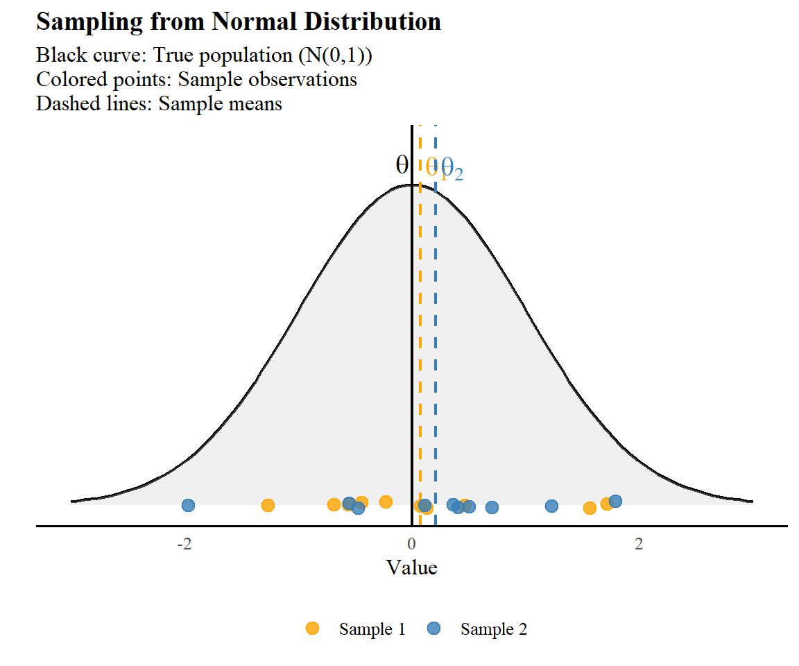
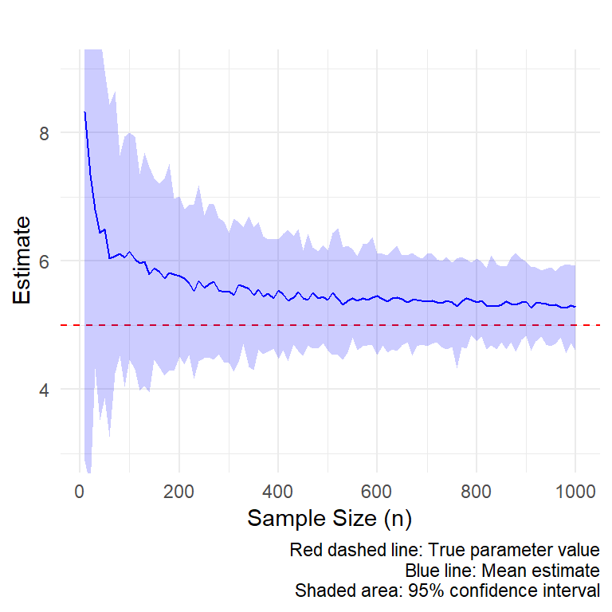

Supplementary Notes
Estimator properties
In this section we recap some important statistical properties of our estimators (for further details please refer to the statistical inference course).
A population parameter \(\theta\) represents a quantitative measurement of population values. Since \(\theta\) is typically unknown, we need to estimate it by drawing samples from the population of interest. Our estimator, \(\hat{\theta}\),is then computed based on the samples we have obtained. The question is then, how well does \(\hat{\theta}\) do its job in estimating \(\theta\)? To evaluate this, we examine key statistical properties of estimators.
Consistency
As we see in Figure 1, there is some discrepancy between the sample means and the true population mean. Thus, it is expected that, as the sample size increases, our estimator \(\hat{\theta}\) will get closer to the true value \(\theta\). Thus an estimator \(\hat{\theta}\) is said to be consistent if it converges to the true parameter \(\theta\) as the sample size \(n\) increases, i.e., \(\hat{\theta} \rightarrow \theta\) as \(n\to\infty\). E.g., let \(\hat{\theta} = \bar{x} + \frac{1}{n}\) be a biased but consistent estimator of \(\theta = 5\) (\(\bar{x}\) represents the sample mean). Figure 2 shows how as sample size increases, the estimator converges to the true parameter.

Expected value
The expected value of an estimator is a weighted average of all possible estimates. Here, the weights are given by the probability of selecting a particular sample \(s\), i.e., \(p(s)\). Mathematically, this can be written as:
\[ \mathbb{E}(\hat{\theta})= \sum_{x\in\Omega} p(s)\hat{\theta(s)} \]
Where \(\Omega\) is the sample space, i.e. the number of possible samples. Furthermore, if all possible samples are equally likely then \(p(s)=\frac{1}{\Omega}\) and the expected values becomes:
\[ \mathbb{E}(\hat{\theta}) = \dfrac{1}{\Omega} \sum_{s\in\Omega} \hat{\theta}(s). \]
Note that the expected value is a function of both, the sampling design (due to \(p(s)\)) and the population being sampled (through the sample estimate \(\hat{\theta}(s)\)).
In practice, \(\mathbb{E}(\hat{\theta})\) cannot be evaluated because we can not measure all the \(N\) elements of our population of interest! (and if we could then \(\theta\) could be evaluated directly on our population rather than obtaining a samples from it). However, understanding this concept is important for two other relevant quantities.
Bias
The bias of an estimator is the difference in magnitude between its expected value and the population parameter for which an estimated is desired:
\[ \textbf{Bias}(\hat{\theta}) = \mathbb{E}(\hat{\theta}) - \theta \]
When \(\mathbb{E}(\hat{\theta}) = \theta\) , \(\hat{\theta}\) is said to be an unbiased estimator of \(\theta\).
Note that the bias is not a property of an individual estimate (e.g., \(\hat{\theta}(s)\)). E.g., we can see in Figure 1 there are some discrepancies between the true population parameter \(\theta\) and the sample estimates \(\hat{\theta}(1)\) and \(\hat{\theta}(2)\). Such discrepancies \(\hat{\theta}(s) - \theta\) are known as sampling errors. This doesn’t mean that an error has been made during the sampling, it just indicates that the value being estimated will differ from the true value because is being estimated from just a fraction of the elements of the population. Thus, one may wonder how much an estimate \(\hat{\theta}\) from one sample will differ from that calculated from a different sample. In principle we would like this difference to be small because that will ensure that no matter which sample we take, the estimated value will be similar across samples.
Variance
The variance of an estimator or sampling variance is the average squared distance between individual estimates \(\hat{\theta}(s)\) and their expected value \(\mathbb{E}(\hat{\theta})\), i.e.,
\[ \text{Var}(\hat{\theta}) = \sum_{s\in \Omega} p(s) \left(\hat{\theta}(s)-\mathbb{E}(\hat{\theta})\right)^2 \] Notice how the variance of an estimator does not depend (unlike the bias) on the true parameter \(\theta\)
Precision
The precision of an estimator is a qualitative measurement that assess how small or large the variability of an estimator is and does not relate to the true value. To illustrate this, suppose we draw 20 random samples with equal probability from our population of interest . Figure 3 shows 100 replicates/data sets of this experiment with 4 different estimators:
\(\hat{\theta}_{1}(s) =\frac{1}{20}\sum_{i=1}^{20} x_i\) - the mean of the \(s\)th sample which is unbiased and precise
\(\hat{\theta}_{2}(s) = \text{arg min } (x_1,\ldots, x_{20})\) - the \(s\)th sample minimum value which is biased and imprecise.
\(\hat{\theta}_{3}(s) = x_1\) - the first observation of the unordered sample which is unbiased and imprecise.
\(\hat{\theta}_{4}(s) =2 + \frac{1}{20}\sum_{i=1}^{20} x_i\) - the mean + constant which is biased but precise.

Imagine a dartboard where the bullseye represents the true population parameter (\(\theta\)). Each throw corresponds to a sample estimate (\(\hat{\theta}(s)\)). Precision refers to how tightly clustered the darts are - a precise estimator produces estimates that land close together, regardless of their position relative to the bullseye. Bias, on the other hand, is the systematic offset from the bullseye - even with perfect precision, a biased estimator would consistently miss the center in the same direction.